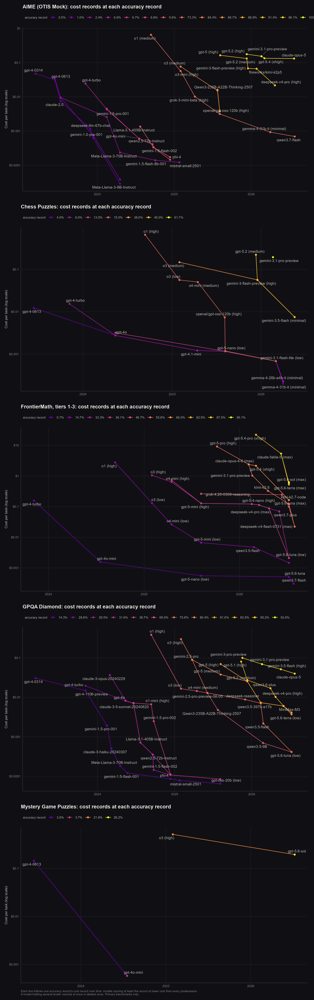

One row per primary benchmark. Each line follows a single accuracy record's cost record over time — models scoring at least that record at lower cost than every predecessor. Nonparametric: nothing here is fitted.

output/record_timelines.png not found — run
Rscript src/record_timelines.R.